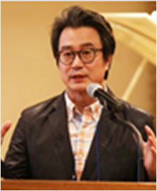
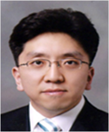
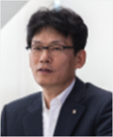
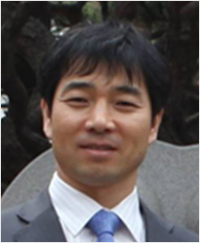
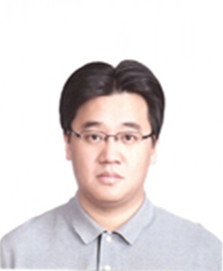
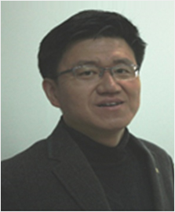

우수연구자 현황
감성 콘텐츠 기술 연구 (Emotion Contents Technology)

황민철 교수
- 연구책임자
- ICT융합대학 미디어소프트웨어학과
- 일반 대학원 감성공학과
- 감성콘텐츠 기술 연구소
- 연구 소개
- 컴퓨터 공학, 디자인, 의학, 심리학, 의공학, 콘텐츠학을 유기적으로
- 협력한 연구와 교육을 실시하고 있음.
- 주요프로젝트
-
- 창의적 융합형 인재 양성_감성 증강 오감 테이블 (한국전파진흥협회)
- 융·복합 콘텐츠 Social 감성인지와 Social Intelligence 모델활용 Life Logging 기반 기술 개발 (미래창조 과학부)
- 뇌신경공학 및 인체 미동 기반 사회적 복합감성 인식 및 상호작용 기술(교육과학기술부)
- 디지로그 휴먼미디어 감성평가 핵심기술 연구개발 (교육과학기술부)
- 서비스 효과증강을 위한 다감각 서비스 공통기술 개발(산업동상자원부/한국산업기술평가관리원)
- 산학협력
-
- 감성과학연구센터
- 더디엔에이
- 바이널엑스
- 상화기획
- 씽크브릿지
- Studio SCOOP
- 미래창조과학부
- SBA 서울산업진흥원 (SBA)
- 서울혁신파크 (SIP)
- 전자통신연구원 (ETRI)
- 한국과학기술연구원 (KIST)
- 한국전파진흥협회 (RAPA)
- 연구성과
-
- “Evaluation of 3D Cognitive Fatigue Using Heart-Brain Synchronization Human-Computer Interaction” 외 SCI 논문 및 국내외 논문 102편
- 자율신경계 반응 실시간 분석모듈 “ 외 특허 출원 및 등록 94개
- “얼굴 표정의 정서 인식과 표현에 근거한 사회지능평가 방법론 “ 외 기술이전 4건, “Social Life Logger Application ” 소프트웨어 등록 6건
- 연구실
-
- 미래백년관 R303
- 석사 연구원 7명, 박사 연구원 5명
- 연구 교수 2명
생체정보공학 연구(Biomedical Information Engineering)

김동근 교수
- 연구책임자
- 미래융합대학 휴먼지능정보공학과,
- 일반대학원 모바일소프트웨어학과 학과장
- 상명대학교 산학연구처/산학협력단장
- 연구 소개
- 인간의 신체적 및 인지적 특성을 고려하여 인간을 위해 사용되는
- 생체정보공학 및 헬스케어시스템을 연구 개발함
- 주요프로젝트
-
- 사용자의 상황정보를 이용한 감성 교감형 고품질 LED 조명 제어 시스템 개발 (중소기업청 산학연협력기술개발과제-기업부설 연구소)
- 고령자 균형감각 증진 및 치매 예방을 위한 Natural User Interface 기술 개발 (스포츠산업기술개발과제)
- 모바일 소프트웨어 인력 양성 사업 (일반대학원 계약학과)
- 실시간 감성정보 공유 서비스 시스템 기술 개발 (신진연구자 지원사업-한국연구재단)
- 산학협력
-
- ㈜ 비엔이스 - 사용자의 상황정보를 이용한 감성 교감형 고품질 LED 조명 제어 시스템 개발 ,기업부설 연구소 설립, 참여기업
- ㈜세이정보 - 고령자 균형감각 증진 및 치매 예방을 위한 Natural User Interface 기술 개발
- 몽키소프트, 여의시스템, 디오스토리, 선도소프트, 노블시스템 – 모바일AR 및 VR, IoT 웨어러블 컴퓨팅, HTM5 웹, 헬스케어 시스템 참여기업
- 연구성과
-
- IEEE Consumer Electronics, Journal of ambient intelligence and smart environments 외 SCI 논문 및 한국정보통신학회, 대한의료정보학회, 한국감성과학회 국내외 논문 30편
- “생체신호 검출크래들 및 휴대용 생체신호 분석기”외 특허출원 등록 10건
- “실시간 반응형 감성이미지 콘텐츠 플레이어 시스템”외 프로그램등록
- 연구실
-
- 미래백년관 R314, 인문사회대학관 S116
- 석사연구원 8명, 학석사연계 1명, 학부연구원 4명
크리에이티브 콘텐츠 랩 연구(Creative Contents)

김종원 교수
- 연구책임자
- 미래융합공과대학 전자공학과,
- 일반대학원 저작권보호학과 학과장
- 연구 소개
- 디지털 신호처리, 패턴인식 및 컴퓨터 비전
- Deep Learning 기반 객체 인식 및 추적
- 디지털 콘텐츠 보안
- 주요프로젝트
-
- 3D 프린팅 디지털 저작물 보호 및 관리기술 개발(미래창조과학부) Location Mapping 기반 스마트 영상 콘텐츠 생성 및 서비스 개발(문화부)
- 초고화질 및 화질열화 동영상 콘텐츠에 대한 CFC기반 실시간 보호-필터링 및 검색 SW 플랫폼 기술 개발(중소기업청)
- 비트토렌트 불완전체로부터의 저작물 식별기술개발(문화부)
- 산학협력
-
- ㈜마크애니 – 국가 R&D 공동
- 한국전자통신연구원 – 국가 R&D 공동
- ㈜나고소프트 – 국가 R&D 공동
- ㈜엠더블유스토리 – 국가 R&D 공동
- ㈜DRMinside – 국가 R&D 공동
- ㈜아이브이티 – 국가 R&D 공동
- ㈜PCN – 국가 R&D 공동
- ㈜엔써즈 – 국가 R&D 공동
- 연구성과
-
- SCI급 “Video fragment format classification using optimized discriminative subspace clustering”외 7편
- SCOPUS “File feature analysis for file identification based on histogram information”외 17편
- 다중변환 도메인에 입자군집최적화 기법을 이용한 자기적응형 포렌식마크 삽입방법, 검출방법, 삽입장치 및 검출장치 외 15건
- 바이너리 문서 영상의 블라인드 워터마킹 기술(MW스토리) 외 1건
- 연구실
-
- 미래백년관 R320
- 전임연구원 2명, 석박사통합과정 3명, 박사과정 1명, 석사과정 1명, 학부생 3명
글로벌창조협력센터 (Center for Global Creation and Collaboration)

박흥국 교수
- 연구책임자
- 박흥국 교수
- ICT융합대학 미디어소프트웨어학과
- 연구 소개
- 개발도상국 국제개발협력사업 수행
- ICT/전자정부 및 경영 등 글로벌 컨설팅 서비스
- 주요프로젝트
-
- 르완다국립대학교 건립사업 컨설팅서비스 (EDCF)
- 르완다국립대학교 건립사업 타당성조사 (EDCF)
- 파키스탄 IT Park 건립사업 타당성조사 (EDCF)
- 나이지리아 전자정부 마스터플랜 수립사업 (KOICA)
- 공공행정-산업에너지 분야 사업평가 용역 (KOICA)
- 한-베 친선 IT대학 설립사업 사후평가(KOICA)
- 탄자니아 다레살람 공과대학 ICT 교육강화사업 사후평가(KOICA)
- 르완다-우간다 대학의 교육연구 역량강화를 위한 예비타당성 조사 (교육부)
- 인도네시아 국립가네샤대학 멀티미디어 디지털아트센터 구축 예비타당성조사 (교육부)
- 키르기츠스탄 통신회사 AKNET 컨설팅 (EBRD)
- 남수단 ICT 기술인력조사 및 교육훈련 필요조사 (AfDB)
- 산학협력
-
- University of Rwanda
- MUNI University, Uganda
- Institut Technologie Bandung, Indonesia
- NITDA, Nigeria
- PSEB, Pakistan
- Ganesha University, Indonesia
국외
- 한국정보화진흥원 (NIA)
- 세계전자정부도시협의체 (WeGO)
- 한국과학기술정책연구원 (STEPI)
- 바른기술 / ㈜씨드인스티튜트 / ㈜안세기술
- 삼우건축 / 범건축 / 유일엔지니어링
국내
- 연구성과
-
- University of Rwanda
- MUNI University, Uganda
- Institut Technologie Bandung, Indonesia
- NITDA, Nigeria
- PSEB, Pakistan
- Ganesha University, Indonesia
저서
- Information & Management, European Journal of OR, Group Decision and Negotiation, Journal of International Information Management 등 국제 저명 학술지와 국내 저명 학술지에 다수의 연구논문 발표
논문
- 연구실
-
- 미래백년관 R312
- 특임교수, 전임연구원, 인턴연구원, 외부연구원
- 한국정부초청외국인장학생(KGSP) : 박사과정 - 나이지리아, 르완다, 우간다
사이버보안경영학 연구(Cyber Security Management)

유진호 교수
- 연구책임자
- 경영대학 경영학과
- 일반대학원 지식보안경영학과 / 경영대학원 사이버보안경영학과
- 학과장
- 연구 소개
- 미래창조과학부 , 한국인터넷진흥원 정보보호석사과정 지원사업을
- 통해 보안경영 지식과 보안공학 기술능력을 갖춘 융합형 전문인력 양성
- 주요프로젝트
-
- 정보보호 석사과정 지원사업 (미래창조과학부 / 한국인터넷진흥원)
- 신규ICT환경의 해외 개인정보 활용사례 및 법제동향분석연구(한국인터넷진흥원)
- 영상정보처리기기 확대에 따른 개인정보보호대책(개인정보보호위원회)
- 악성코드 유포 탐지기술 현황조사 및 발전모델 연구(한국인터넷진흥원) 등
- 산학협력
-
- ㈜싸이버원: 보안컨설팅 인력양성
- ㈜씨에이에스: 보안컨설팅 인력양성
- A3 시큐리티: 보안컨설팅 인력양성
- 한국아이티평가원: 전문심사원 양성
- 드림시큐리티: S/W 개발인력 양성
- ㈜비트러스트: 보안컨설팅 인력양성
- 써드아이: 해킹방어 전문교육 협력 등
- 연구성과
-
-
“국내외 포털사이트의 개인정보 취급방침 비교 및 고찰(김성현,전창욱)”
15년 한국정보보보호학회 하계
학술대회 우수상 수상 -
“다면평가제도의 산업보안 분야에 대한 활용방안과효과성분석(황윤희,정호준)”
15년 산업보안논문경진대회 은상 수상
-
“국내외 포털사이트의 개인정보 취급방침 비교 및 고찰(김성현,전창욱)”
- 연구실
-
- 연구실 위치(미래백년관 R319)
- 석사연구원 13명
패턴인식 연구 (Pattern Recognition)
이의철 교수
- 연구책임자
- 미래융합공과대학 휴먼지능정보공학과
- 휴먼지능정보공학과 학과장
- 창업지원단 창업교육센터장
- 연구 소개
- 디지털 영상/신호에서 검출된 데이터 분석을 통해 기존에 사람이 내
- 리던 결정이나 판단을 기계가 수행할 수 있도록 하는 연구 진행
- 디지털영상(신호)처리, 컴퓨터비젼, 휴먼-컴퓨터 인터페이스,
- 인공지능 분야 연구
- 주요프로젝트
-
- 생체기반 영상정보 정량적 분석 시스템 / 한국연구재단: 바이오의료원천기술개발사업
-
피부 영상의 화소 증폭을 통한 심혈관 반응신호 검출과 바이오인식 응용 연구 /
한국연구재단: 신진연구사업 - Social 감성인지 Life Logging 기술 개발 / 정보통신기술진흥센터: 방송통신기술개발사업
- 소프트웨어 안정성 보증 센터 / 정보통신기술진흥센터: 대학ICT연구센터지원사업
- NUI/NUX 플랫폼 기술 개발 / 정보통신기술진흥센터: 대학ICT연구센터지원사업
- 혼합현실 기반 재난모의시설 개발 / 국립재난안전연구원
- 산학협력
-
- 기산전자㈜ – 지폐계수기 제조업체. 인식SW 기술이전 및 졸업생 취업 다수
- ㈜브이아이테크 – 중기청 산학연과제 공동진행, 바이오인증기술 사업화 진행
- ㈜이니셔티브식스 –졸업생 취업, 정부사업 공동 추진
- Gary Kim Games – 보드게임용(Rising 5) 스마트폰 인터페이스 공동 개발
- 연구성과
-
- Method for restoring PPG signals using ECG correspondences and SVR , Electronics Letters 외 SCI 저널 논문 40여편 및 등재지 논문 30여편 게재, 국제학술대회 30여편, 국내학술대회 20여편 논문 발표
- 국내외 특허 30여건 등록(20여건 출원중), 소프트웨어 저작권 등록 7건
- 기술이전 5건(2억원)
자세한 내용은 연구실 홈페이지http://pr.smu.ac.kr
- 연구실
-
- 연구실 위치(미래백년관 R313)
- (2016년 9월 현재 전일제 기준) 박사과정 3명, 석사과정 8명, 학사과정 3명
스마트배전연구 (Smart Distribution Power System)
조수환 교수
- 연구책임자
- 미래융합공학대학 전기공학과 학과장
- 일반대학원 전기공학과 학과장
- 연구 소개
- 전력품질 , 신호처리기법 연구
- 전력수요예측 및 ESS관련연구
- DC배전, 마이크로그리드
IES (Intelligent Energy System)

허진 교수
- 연구책임자
- 미래융합공학대학 전기공학과
- 일반대학원 전기공학과
- 연구 소개
- 풍력발전 출력예측 및 계통연계방안 연구
- 전력시스템 연쇄사고 및 복원 모델링 연구
- 주요프로젝트
-
- 플리커 관리방안 수립(한전전력연구원)
- 발전기 Auto synchronizer 개발(이투에스)
- 마이크로그리드 연계형 RFB 개발(롯데케미칼)
SDPS
- 제주도 풍력발전단지 예측 시스템 개발(KERI)
- 연쇄사고 위험도 확률모형 개발(한전전력연구원)
- 에너지 빅데이터 기반의 전력망 복원(연구재단)
- 실계통 전압제어 및 운영방안 개선(전력거래소)
- 신재생 계통연계검토 및 기준수립(한국전력공사)
IES
- 산학협력
-
- ㈜롯데케미칼 – RFB 운영개발
- ㈜이투에스 – Auto Synchronizer 개발
- ㈜에너클 – 지능형수요관리
SDPS
- 한국전기연구원 – 풍력발전 예측시스템 개발
- 전력연구원-신재생에너지 모니터링 시스템 개발
- ㈜이투에스 – 발전기정수추출 해석 기법 개발
IES
- 연구성과
-
- 플리커 측정지수 산출을 위한 220V 용 가중치 필터” 외 특허출원 및 등록 4건
-
“Time-Frequency Analysis of Power Quality Disturbances via the Gabor-Wigner Transform
(IEEE Trans. on Power Delivery)” 외 국내외 논문 30편 게재
SDPS
-
“Impact of 154-kV HTS Cable to Protection Systems of the Power Grid in South Korea
(IEEE Trans on Applied Superconductivity)”외 국내외 논문 30편 개제
IES
- 연구실
-
- 미래백년관 R315
- 박사 과정 1명, 석사 과정 3명,학/석사 연계과정 5명 (총 9명)
소프트웨어 안전성 보증연구 (Software Safety Assurance Research)

한혁수 교수
- 연구책임자
- ICT융합대학 컴퓨터과학과
- ICT융합대학 학장
- 소프트웨어 안전성 보증 연구센터 센터장
- 연구 소개
- 오픈소스 도구 기반의 소프트웨어 안전성 보증을 위한 정확성 확보
- 체계 연구
- 안전성 인식과 실무 역량을 겸비한 소프트웨어 인력 양성
- 주요프로젝트
-
- 소프트웨어 안전성 보증 프로세스 개발 및 적용 체계 구축
- 정확성 기반의 소프트웨어 안전성 확보 기술 연구
- 오픈소스 도구 기반의 소프트웨어 안전성 보증 기술 적용 연구
- ISO 26262의 안전성분석기법 적용 연구
- 계수기 임베디드 소프트웨어의 안전성 보증 프로세스 구축
- 산학협력
-
- 서울여자대학교, 부산대학교, 경기대학교, 충남대학교
참여 대학
- (주)에스피아이디, 기산전자(주)
현업 연구 기업
- (주)브이아이테크, 비컴솔루션(주), 부리멀티미디어(주), 오토아이티(주), 가온미디어(주), 성원디엔텍(주)
참여 기업
- 연구성과
-
- “사용사례와 HAZOP 기반의 위험원 식별 및 테스트케이스 설계 방안” 및 “CTT기반의 STPA를 활용한 Hazard 식별 프로세스” 외 SCI논문 및 국내외논문 29편
- “테스트 기법을 이용한 최악 실행 시간 측정 방법” 외 특허 출원 및 등록 7건
- “CMMI 기반의 SW 프로세스 개선 기술 ” 외 기술 이전 6건
- 연구실
-
- 미래백년관 R302
- 참여 교수 13명, 전임연구원 1명, 박사연구원 13명, 석사연구원 20명, 학부연구원 8명